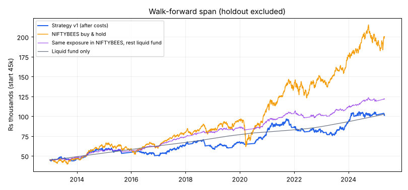

Research, not advice. No system can guarantee profit; you can lose money. You decide and place every order yourself.
| FAIL | Walk-forward: beats NIFTYBEES in most periods | won 3 of 13 periods (23%); needed 62% |
| FAIL | Holdout: beats NIFTYBEES and liquid fund | strategy -4.1% vs NIFTYBEES -3.2% vs liquid fund 9.8% |
| PASS | Holdout drawdown <= 15% | -13.2% |
| FAIL | Walk-forward drawdown <= 20% | -21.7% (continuous run) |
| PASS | Enough trades (>= 100) | 521 trades |
| FAIL | Excess return statistically convincing | t-stat -1.55; needed 1.18 (because 2 variant(s) tried) |
Variants tried so far (all versions and proposals ever tested): 2. More variants = higher chance of a lucky fit, so the bar rises with this number.
| period | total_return_pct | niftybees_return_pct | liquid_fund_return_pct | exposure_matched_return_pct | max_drawdown_pct | niftybees_max_dd_pct | trades | win_rate_pct | avg_r | avg_exposure_pct | beat_niftybees |
|---|---|---|---|---|---|---|---|---|---|---|---|
| WF 2013 | 3.55 | 4.6 | 9.28 | 7.82 | -10.83 | -13.56 | 30 | 36.7 | -0.1 | 30.6 | False |
| WF 2014 | 28.77 | 31.25 | 9.12 | 19.06 | -5.7 | -6.21 | 46 | 67.4 | 0.453 | 37.7 | False |
| WF 2015 | -3.66 | -4.31 | 8.4 | 0.86 | -11.22 | -14.99 | 35 | 31.4 | -0.289 | 23.5 | True |
| WF 2016 | -7.12 | 3.69 | 7.65 | 9.74 | -10.1 | -11.47 | 35 | 37.1 | -0.364 | 32.1 | False |
| WF 2017 | 24.83 | 28.69 | 6.67 | 19.5 | -3.7 | -3.85 | 51 | 60.8 | 0.371 | 50.0 | False |
| WF 2018 | -9.35 | 4.95 | 7.49 | 7.86 | -15.32 | -14.01 | 36 | 27.8 | -0.423 | 31.5 | False |
| WF 2019 | 11.86 | 13.29 | 6.74 | 8.06 | -8.42 | -10.46 | 36 | 50.0 | 0.146 | 39.0 | False |
| WF 2020 | 19.16 | 15.25 | 4.35 | 8.19 | -7.0 | -36.24 | 37 | 59.5 | 0.373 | 28.6 | True |
| WF 2021 | 6.07 | 17.22 | 3.36 | 10.14 | -8.87 | -9.51 | 58 | 46.6 | 0.098 | 33.7 | False |
| WF 2022 | -2.56 | 3.93 | 4.87 | -3.01 | -6.32 | -15.62 | 46 | 37.0 | -0.167 | 30.4 | False |
| WF 2023 | 9.35 | 18.79 | 7.02 | 9.84 | -10.18 | -6.98 | 50 | 40.0 | 0.064 | 33.1 | False |
| WF 2024 | 9.68 | 9.39 | 7.43 | 7.21 | -7.06 | -10.46 | 52 | 48.1 | 0.185 | 35.6 | True |
| WF 2025 (Jan-Apr) | -4.05 | 2.55 | 2.42 | 1.08 | -4.08 | -8.27 | 6 | 0.0 | -1.104 | 8.0 | False |
| HOLDOUT | -4.09 | -3.2 | 9.75 | 4.8 | -13.23 | -14.77 | 52 | 36.5 | -0.246 | 26.9 | False |
Walk-forward periods are calendar years from 2013-01-01 to before 2025-05-01. Strategy settings were fixed before testing and were not tuned on any of them. The HOLDOUT (2025-05-01 to 2026-11-02) is never used to choose settings.
{"total_return_pct": 124.62, "cagr_pct": 6.79, "max_drawdown_pct": -21.74, "sharpe": 0.77, "trades": 521, "win_rate_pct": 47.0, "avg_r": 0.065, "avg_days": 15.6, "profit_factor": 1.11}; t-stat of monthly excess return vs NIFTYBEES: -1.55

{"breakout": {"trades": 94, "win_rate_pct": 48.9, "avg_r": 0.02, "avg_days": 14.1}, "pullback": {"trades": 424, "win_rate_pct": 44.8, "avg_r": 0.05, "avg_days": 15.0}}
1181 of 1610 stocks that were ever in the monthly top-500 have usable price data (73%). 432 were quarantined for bad data.